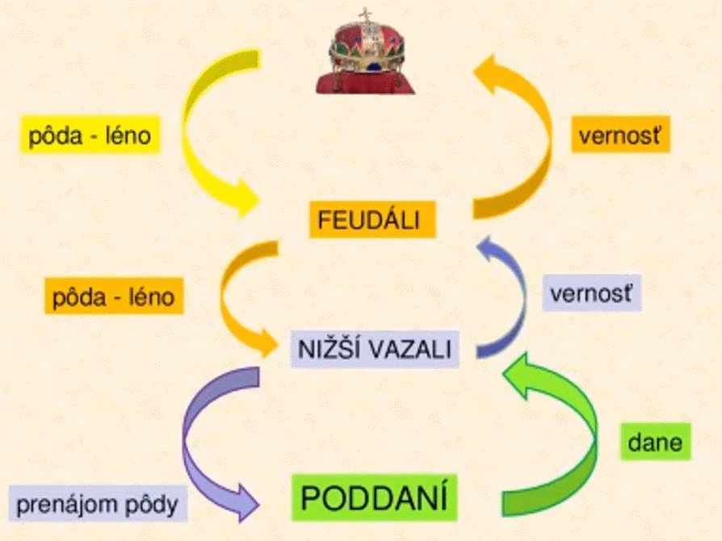
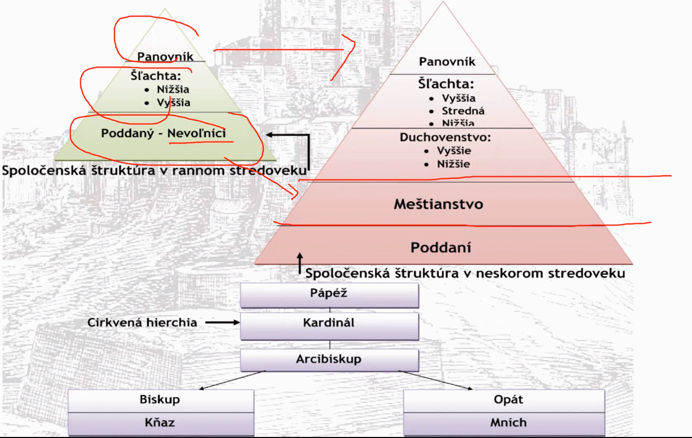

luamo aj stredovekí umelci to nazvali dobou temna
dokonca aj to meno “stredovek” už bolo vymyslené počas stredoveku
476(zánik západorímskej ríše) - 1492(objavenie ameriky)
zánik z.r.r – všetko sa zmení
objavenie ameriky – všetko sa zmení

luamo aj stredovekí umelci to nazvali dobou temna
dokonca aj to meno “stredovek” už bolo vymyslené počas stredoveku
476(zánik západorímskej ríše) - 1492(objavenie ameriky)
zánik z.r.r – všetko sa zmení
objavenie ameriky – všetko sa zmení
Ekonomický systém, bol počas stredoveku ale neznamená to stredovek!!
lénny systém ( ͡° ͜ʖ ͡°) (synonymum feudalizmu, léno = feudum)
léno, feudum – prepožičaná pôda (majetok), pod sľubom vernosti
VŠETKO SA ODVÍJA OD PÔDY
lénny vzťah:
léno prijíma vazal/lénnik
léno udeľuje lénny pán/senior/feudál

kráľ → šľachta → poddaní
najprv sa pôda dostávala iba dočasne
potom doživotne
nakoniec dedične
takže panovník stráca moc a preberá ju šľachta
no a poddaní im samozrejme platia veľké dane:
peňažná
naturálna
robotná – “ísť na panské” – dominikál – panská pôda
ak mám záprah, idem na 3 dni, ake nemám, idem na 5
keď už sme pri tom dominikáli, tak je aj rustikál – prenajímaná pôda

Hierarchia spoločsnosti – lénny systém
náboženstvo
územný rozsah / obnova impéria
panovníci / vzťah poli
Už sme si ukazovali štáty, ktoré vznikli po sťahovaní národov. Tieto štáty ale zanikli veľmi skoro, lebo nemali vpodstate žiaden systém a na ich mieste vznikli nové štáty